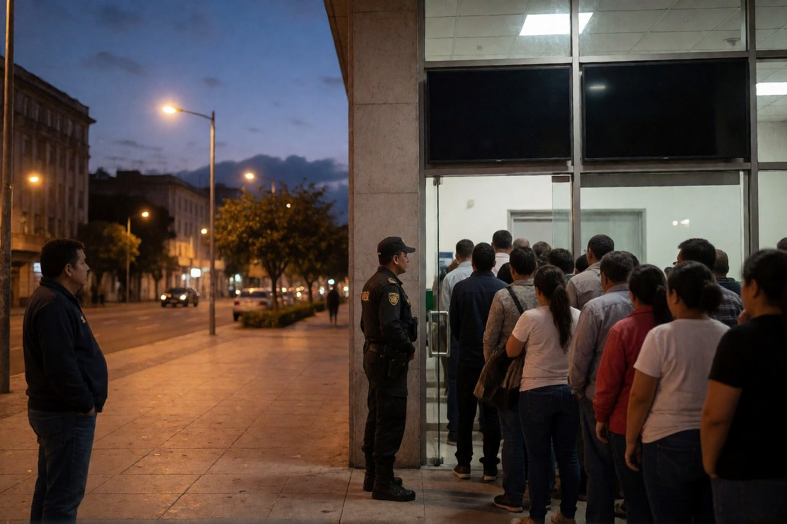

Geopolitica · 6 novembre 2026
Paraguay, il presidente si dimette ma il Parlamento non lo lascia andare

Il crollo della banca Ueno ha lasciato senza accesso ai conti quasi tre milioni di clienti. Santiago Peña ha annunciato le dimissioni; il Senato le ha congelate e ha aperto il processo di destituzione.
di Franco Zanghì
Una banca crolla, quasi tre milioni di persone restano senza accesso ai propri soldi, e in tre giorni il presidente Santiago Peña, uno degli alleati più vicini a Donald Trump in Sudamerica, annuncia le dimissioni. Solo che il Parlamento non le accetta.
La banca
Si chiama Ueno: in meno di cinque anni è passata da piccola finanziaria a banca digitale con oltre 2,9 milioni di clienti, in un Paese che ha sei milioni e mezzo di abitanti. Lunedì la Banca centrale ha accertato che il suo capitale era sceso sotto la metà del minimo di legge, dopo aver trovato prestiti poco documentati a società legate ai proprietari. Martedì l'ha presa in mano. Da quel momento l'applicazione non mostra più i saldi, le carte sono bloccate e davanti alle filiali ci sono le code.
Secondo l'Associated Press, dentro Ueno c'erano circa 800 milioni di dollari di denaro pubblico, un quarto di tutti i depositi: fra gli altri quelli del fondo delle pensioni e della sanità e quelli delle società che gestiscono le dighe. Il capo della Banca centrale, Carlos Carvallo, nominato da Peña, aveva guidato la finanziaria da cui Ueno è nata, e si è dimesso. Lo stesso Peña aveva una quota nel gruppo proprietario della banca, che dice di aver venduto l'anno scorso.
Perché le dimissioni non bastano
Giovedì Peña ha pubblicato un video: si dimette, ha detto, pensando alla stabilità del Paese e alla pace sociale, e ha chiesto scusa se in qualche momento ha sbagliato. Poco dopo la Camera dei deputati lo ha messo sotto accusa, 78 voti a zero. Le dimissioni però non sono passate: la seduta comune è rimasta senza numero legale, quando i parlamentari del suo partito, il Partito Colorado, sono usciti dall'aula.
La ragione la spiegano Al Jazeera e il Rio Times: un presidente che si dimette diventa senatore a vita, con l'immunità. Un presidente condannato dal Senato, no. E per condannarlo servono 30 voti su 45. Venerdì il Senato ha respinto con 39 voti contro 3 la richiesta di rinviare di 72 ore il processo, ha convocato Peña a presentare la propria difesa e ha avviato le sedute. Il presidente, formalmente, resta in carica, perché le dimissioni non sono state accettate.
La giustizia e i risparmiatori
Un giudice ha disposto il carcere preventivo per sei dirigenti della banca, fra cui il fondatore Miguel Vázquez, e la procura ha contestato a 27 persone l'infedeltà e il tentativo di truffa. Il procuratore generale ha aperto tre indagini: sui controlli, sulla gestione del crollo e sul denaro pubblico finito nella banca. Peña dice che collaborerà. Ma il segnale più pesante arriva dal suo stesso partito: l'ex presidente Horacio Cartes, il suo padrino politico, ha dichiarato che il Partito Colorado non starà dalla parte di chi ha saccheggiato i soldi pubblici, quelli privati e quelli dei pensionati.
Il fondo di garanzia copre fino a circa 36 mila dollari a cliente e, secondo le autorità, basta per il 97 per cento dei correntisti. I primi rimborsi devono arrivare entro cinque giorni lavorativi, partendo dai conti più piccoli.
Perché riguarda anche noi, e che cosa guardare
Il Paraguay è uno dei Paesi del Mercosur, il blocco sudamericano con cui l'Unione europea ha firmato l'accordo commerciale proprio ad Asunción, a gennaio, dopo venticinque anni di trattative. E Peña, poche settimane fa, era stato accolto a Washington come alleato chiave nella regione.
Non è soltanto il fallimento di una banca. È il caso di un controllore che veniva dalla banca da controllare, e di un presidente che fino al mese scorso definiva le critiche una campagna di fango. Quando la vigilanza e la politica stanno dalla stessa parte del tavolo, a pagare sono sempre i correntisti. Adesso contano due cose: il voto del Senato, che decide se Peña lascia da condannato e senza immunità — al suo posto andrebbe il vicepresidente Pedro Alliana, che la Camera ha appena salvato da un'accusa simile — e il fatto che i rimborsi arrivino davvero.
Fonti
- Associated Press (via PBS), 5 novembre 2026
- ABC Color, «En vivo, juicio político a Santiago Peña», 6 novembre 2026
- BioBioChile, «Senado de Paraguay rechaza prorrogar juicio político contra presidente Peña», 6 novembre 2026
- Infobae, «Crisis política en Paraguay, en vivo», 6 novembre 2026
- Al Jazeera / Reuters ed Euronews, 5 novembre 2026
Situazione in movimento, aggiornata alla sera del 6 novembre 2026 (Asunción è quattro ore indietro rispetto all'Italia). Al momento della pubblicazione il Senato non ha ancora votato sulla destituzione: Santiago Peña resta formalmente presidente e le sue dimissioni non sono state accettate.